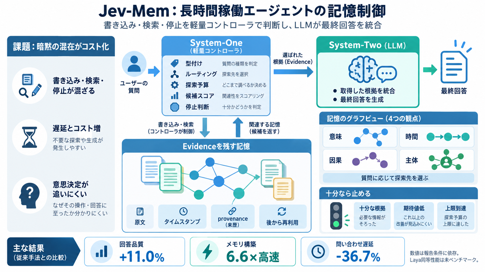

LoCoMo vs. LongMemEval vs. BEAM: The 2026 AI Memory Benchmark Guide
At a glance: | Benchmark | Year | What it adds | --- | LoCoMo | 2024 | Very long multi-session dialogue at scale | | …

長時間稼働エージェント向けに、記憶の「書き込み・検索・停止」の意思決定を軽量コントローラ（System-One）に切り出し、最終回答の統合をLLM（System-Two）に任せる構成です。
長期稼働では、(1) 書き込みの構造化、(2) 問い合わせでどこを探索しどれだけ根拠を集めるか、の判断が頻繁に発生します。
Jev-Memは、記憶管理の意思決定（型付け、関係推定、ルーティング、探索予算、候補スコア、evidence評価）をSystem-Oneが担います。
観測（記憶）は原文・タイムスタンプ・provenance（来歴）とともに保持し、後で重要性が判明した場合でも根拠として再利用します。
記憶は「意味・時間・因果・エンティティ（誰/何に関わるか）」の4観点（グラフビュー）で関連づけられます。
問い合わせが来ると、コントローラは関連するビューに探索をルーティングし、探索コスト（トラバーサル予算や検索上限）を配分します。
追加の根拠が必要かどうかを反復評価し、十分だと判断した時点で探索を停止します。
Noul（二値命題）やChoice（カテゴリ決定）などの型付きの意思決定出力と、コードによる検証・上限適用・トレースが説明されています。
入力データでは、相対11.0%の回答品質改善、メモリ構築6.6×の高速化、平均遅延36.7%削減が報告されています。
System-One側の意思決定をJeVまたはLayaで動かせる設計が言及されていますが、論文ベンチマークではLayaが未実施とされています。
性能は「ルーティング」「探索予算」「停止条件」に強く依存し、再現には評価プロトコルや探索上限などの前提を揃える必要があります。
このスライドは、ユーザー提示のREADME要約・補足（Laya未ベンチマーク言及など）と、関連する一般情報（LongMemEvalの評価手順の概略）をもとに要点化しています。
At a glance: | Benchmark | Year | What it adds | --- | LoCoMo | 2024 | Very long multi-session dialogue at scale | | …
LoCoMo was initially introduced to address the challenge of evaluating LLMs on very long-term, persona-grounded, multi-m…
Use the benchmark to investigate memory quality, then add tests for your application's permissions, deletion behavior, p…
We meticulously create 500 questions of seven types (see examples above) to test five long-term memory abilities: [...] …
A log file will be generated under the folder `generation_logs/`. You can then follow the instructions above in "Testing…